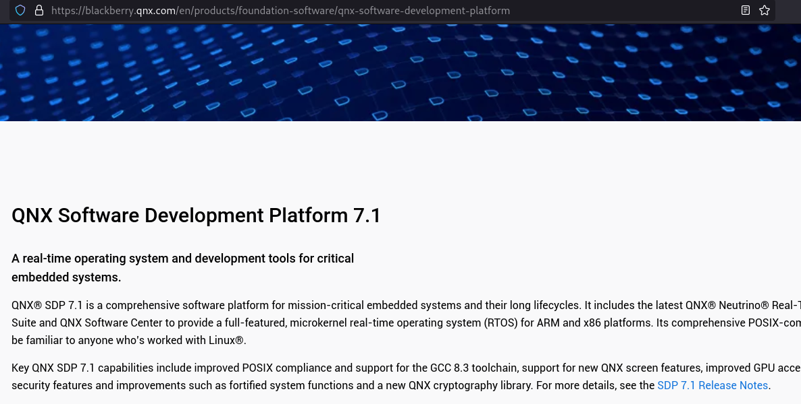
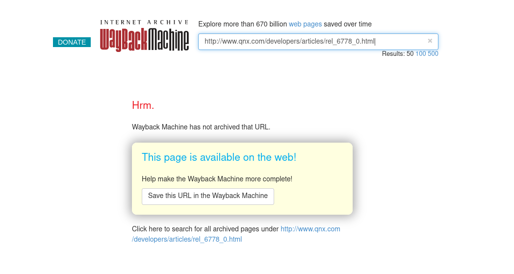
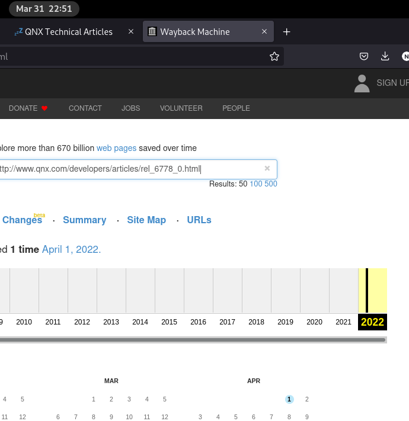
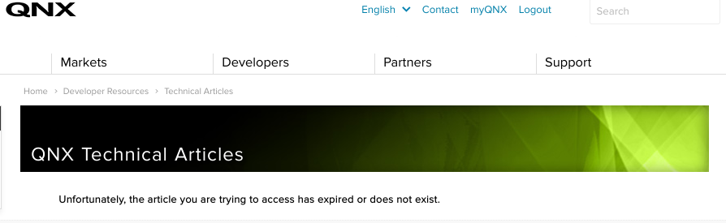
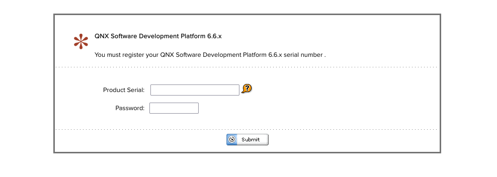
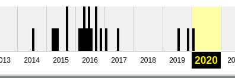

QNX - The Search for the Release Notes
April 1, 2022
Looking at QNX for the past 3 months has been enjoyable for the most part. But the thing that annoys me the most is the difficulty of finding the release notes for each QNX SDP. While I do have some internal access to a document that links to all the QNX release notes at work, I found it annoying how it cannot be easily obtained through a google search. (imagine if web search and web indexing services did not exist, the internet would be unnavigatable).
So I decided to spend about 30 minutes to see whether or not if I can find the release notes for QNX 6.6, 7.0, and 7.1 using the power of Google and with some brute-forcing. Here are the links if you cannot be bother to hear my ramblings on how I obtained the links:
- QNX 7.1 SDP: http://www.qnx.com/developers/articles/rel_6778_0.html
- QNX 7.0 SDP: http://www.qnx.com/developers/articles/rel_6423_0.html
- QNX 6.6 SDP: http://www.qnx.com/developers/articles/rel_5849_7.html
- BONUS - QNX 6.5 SP 1: http://www.qnx.com/developers/articles/rel_5189_48.html
I also took the courtesy to ensure a snapshot of the links exist on Wayback Machine (thank goodness they exist) in case Blackberry ever decides to take down the page when they decide to restructure the website (not rare that links die whenever a company gets acquired or upgrade their websites).
Finding QNX 7.1 SDP Release Notes
QNX 7.1 is the latest QNX SDP so I began my search knowing this fact. As I suspected, this was very simple to find. On QNX’s website about their SDP, the link is provided.

Checking if the webpage was archived on Wayback Machine, it turns out it was not which was quite surprising.

So I took the liberty to being the first person to archive the release notes for QNX 7.1. As you can see in the image below, Wayback Machine’s server time is a few hours ahead of mine, saving the webpage on April 1 when it’s still March 31 for me in the EST timezone.

Finding QNX 7.0 SDP Release Notes
This was where things got more difficult. A quick google search and browsing the top search results did not give me any positive results.
Therefore, I took the brute force approach whereby I modify the numbers in the link till I found the release notes for QNX 7.0
(i.e. change the last path in the url rel_6778_0.html and change it to smaller number such as rel_6560_0.html).
As you can imagine, this took quite a bit of time to find the webpage. I would either hit a random release note or an error stating “the article you are trying to access has expired or does not exist”. I initially thought I found the release note but it was missing a lot of information. I did not notice this till I was about to publish my findings. So I spent another 20 or so minutes brute forcing till I hit gold.

Finding QNX 6.6 SDP Release Notes
I completely gave up brute-forcing after many attempts. So I went back to googling and surfing QNX website for the documentation. Unfortunately for me, I have no access to QNX 6.6 Documentation as I don’t have a QNX 6.6 License (I technically do but that is for work so I cannot simply use it on my personal laptop and I wanted to find the links without any external help).

But luckily I was able to find the release notes by searching on open qnx forums. Unlike the release notes for 7.0 and 7.1, QNX 6.6 SDP release notes has been archived plenty of times which was a relief.

Bonus - Finding QNX 6.5 SP 1 Release Notes
During my search for QNX 6.6 Release Notes, I came across on open qnx forums people
referencing QNX 6.5 SP 1 Release Notes. While I have absolutely no clue how the links are formatted, but I noticed that the link for
QNX 6.5 SP 1 does not follow the format I was bruteforcing (i.e. rel_xxxx_0.html) but rel_5189_48.html. Which I presume corresponds to the major and minor release.
This made me realize some version of the release note has been archived before which makes sense due to its age.
Summary
In the event the links are down, visit Wayback Machine as the snapshot should exist for all of them. Though you may need to search for
them since the release note versions may be different (i.e. search http://www.qnx.com/developers/articles/* and filter by the major release
number).
- QNX 7.1 SDP: http://www.qnx.com/developers/articles/rel_6778_0.html
- QNX 7.0 SDP: http://www.qnx.com/developers/articles/rel_6423_0.html
- QNX 6.6 SDP: http://www.qnx.com/developers/articles/rel_5849_7.html
- BONUS - QNX 6.5 SP 1: http://www.qnx.com/developers/articles/rel_5189_48.html
http://www.qnx.com/developers/articles/rel_6404_12.html